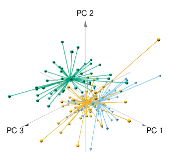
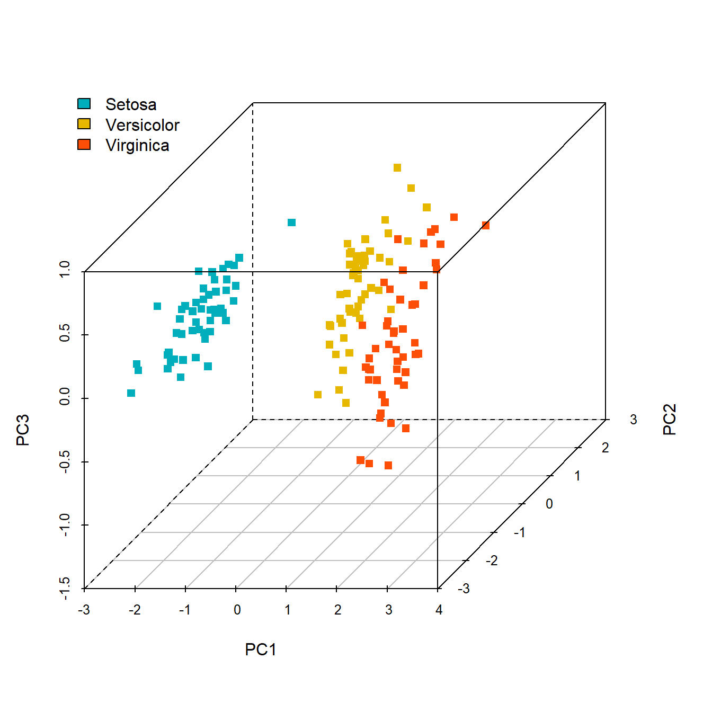

str(iris)
## 'data.frame': 150 obs. of 5 variables:
## $ Sepal.Length: num 5.1 4.9 4.7 4.6 5 5.4 4.6 5 4.4 4.9 ...
## $ Sepal.Width : num 3.5 3 3.2 3.1 3.6 3.9 3.4 3.4 2.9 3.1 ...
## $ Petal.Length: num 1.4 1.4 1.3 1.5 1.4 1.7 1.4 1.5 1.4 1.5 ...
## $ Petal.Width : num 0.2 0.2 0.2 0.2 0.2 0.4 0.3 0.2 0.2 0.1 ...
## $ Species : Factor w/ 3 levels "setosa","versicolor",..: 1 1 1 1 1 1 1 1 1 1 ...
psych::headTail(iris)
## Sepal.Length Sepal.Width Petal.Length Petal.Width Species
## 1 5.1 3.5 1.4 0.2 setosa
## 2 4.9 3 1.4 0.2 setosa
## 3 4.7 3.2 1.3 0.2 setosa
## 4 4.6 3.1 1.5 0.2 setosa
## ... ... ... ... ... <NA>
## 147 6.3 2.5 5 1.9 virginica
## 148 6.5 3 5.2 2 virginica
## 149 6.2 3.4 5.4 2.3 virginica
## 150 5.9 3 5.1 1.8 virginica22 R语言主成分分析
在医学研究中，为了客观、全面地分析问题，常要记录多个观察指标并考虑众多的影响因素，这样的 者，数据虽然可以提供丰富的信息，但同时也使得数据的分析工作更趋复杂化。
例如，在儿童生长发育的评价中，收集到的数据包括每一儿童的身高、体重、胸围、头围、坐高、肺活量等十多个指标。怎样利用这类多指标的数据对每一儿童的生长发育水平作出正确的评价？如果仅用其中任一指标来作评价，其结论显然是片面的，而且不能充分利用已有的数据信息。如果分别利用每一指标进行评价，然后再综合各指标评价的结论，这样做一是可能会出现各指标评价的结论不一致，甚至相互冲突，从而给最后的综合评价带来困难；二是工作量明显增大，不利于进一步的统计分析。
事实上，在实际工作中，所涉及的众多指标之间经常是有相互联系和影响的，从这一点出发，希望通过对原始指标相互关系的研究，找出少数几个综合指标，这些综合指标是原始指标的线性组合，它既保留了原始指标的主要信息，且又互不相关。这样一种从众多原始指标之间相互关系入手，寻找少数综合指标以概括原始指标信息的多元统计方法称为主成分分析。
关于特征值、特征向量、方差贡献率、累积方差贡献率等概念，大家可以阅读网络教程或者课本等。
今天只是小试牛刀，后面会为大家带来更加详细的主成分分析可视化。
22.1 加载数据
使用R语言自带的iris鸢尾花数据进行演示。
首先给大家介绍下R自带的主成分分析函数。
22.2 相关性检验
在进行PCA之前可以先进行相关性分析，看看相关系数：
cor(iris[,-5])
## Sepal.Length Sepal.Width Petal.Length Petal.Width
## Sepal.Length 1.0000000 -0.1175698 0.8717538 0.8179411
## Sepal.Width -0.1175698 1.0000000 -0.4284401 -0.3661259
## Petal.Length 0.8717538 -0.4284401 1.0000000 0.9628654
## Petal.Width 0.8179411 -0.3661259 0.9628654 1.000000022.3 KMO和Bartlett球形检验
使用psych实现，关于这两个检验的解读大家自行学习~
psych::KMO(iris[,-5])
## Kaiser-Meyer-Olkin factor adequacy
## Call: psych::KMO(r = iris[, -5])
## Overall MSA = 0.54
## MSA for each item =
## Sepal.Length Sepal.Width Petal.Length Petal.Width
## 0.58 0.27 0.53 0.63这个检验主要反应样本量够不够，Overall MSA是总体的检验统计量，然后是每个变量的检验统计量。 MSA越大越好。一般要求大于0.5才可以（没有绝对标准，根据实际情况来）。
psych::cortest.bartlett(iris[,-5])
## R was not square, finding R from data
## $chisq
## [1] 706.9592
##
## $p.value
## [1] 1.92268e-149
##
## $df
## [1] 6p.value小于0.05，表明数据可以进行主成分分析。
22.4 R自带的PCA
主成分的实现可以通过分步计算，主要就是标准化-求相关矩阵-计算特征值和特征向量。
R中自带了prcomp()进行主成分分析，这就是工具的魅力，一次完成多步需求。
使用prcomp()进行主成分分析：
# R自带函数
pca.res <- prcomp(iris[,-5], scale. = T, # 标准化
center = T # 中心化
)
# 查看标准差、特征向量（回归系数）
pca.res
## Standard deviations (1, .., p=4):
## [1] 1.7083611 0.9560494 0.3830886 0.1439265
##
## Rotation (n x k) = (4 x 4):
## PC1 PC2 PC3 PC4
## Sepal.Length 0.5210659 -0.37741762 0.7195664 0.2612863
## Sepal.Width -0.2693474 -0.92329566 -0.2443818 -0.1235096
## Petal.Length 0.5804131 -0.02449161 -0.1421264 -0.8014492
## Petal.Width 0.5648565 -0.06694199 -0.6342727 0.5235971主成分就是根据这几个系数(这几个系数也叫主成分载荷)算出来的：
PC1 = 0.5210659Sepal.Length - 0.2693474Sepal.Width + 0.5804131Petal.Length + 0.5648565Petal.Width
后面的主成分计算方法以此类推。
# 样本得分score
head(pca.res$x)
## PC1 PC2 PC3 PC4
## [1,] -2.257141 -0.4784238 0.12727962 0.024087508
## [2,] -2.074013 0.6718827 0.23382552 0.102662845
## [3,] -2.356335 0.3407664 -0.04405390 0.028282305
## [4,] -2.291707 0.5953999 -0.09098530 -0.065735340
## [5,] -2.381863 -0.6446757 -0.01568565 -0.035802870
## [6,] -2.068701 -1.4842053 -0.02687825 0.006586116# 查看标准差、方差贡献率、累积方差贡献率
summary(pca.res)
## Importance of components:
## PC1 PC2 PC3 PC4
## Standard deviation 1.7084 0.9560 0.38309 0.14393
## Proportion of Variance 0.7296 0.2285 0.03669 0.00518
## Cumulative Proportion 0.7296 0.9581 0.99482 1.00000Standard deviation:标准差Proportion of Variance:方差贡献率Cumulative Proportion:累积方差贡献率
关于主成分分析中的各种术语解读，我推荐知乎上的一篇文章：主成分分析各类术语的白话解读
22.5 结果可视化
默认的主成分分析结果可视化：
biplot(pca.res)
碎石图可以帮助确认最佳的主成分个数，可以使用默认的screeplot()实现：
# 默认是条形图，我们改为折线图，其实就是方差贡献度的可视化
screeplot(pca.res, type = "lines")
可以看到用2-3个主成分就挺好了。
一般来说，主成分的保留个数可以按照以下原则确定： 1. 以累积贡献率确定，当前K个主成分的累积贡献率达到某一特定值（一般选70%或者80%都行）时，则保留前K个主成分； 2. 以特征值大小来确定：如果主成分的特征值大于1，就保留这个主成分。
但是保留几个主成分并没有绝对的标准，大家根据自己的实际情况来！
今天只是小试牛刀，后面会为大家带来更加详细的主成分分析可视化。
22.6 主成分分析可视化(超详细)
网络上很多R语言教程都是基于R语言实战进行修改，今天为大家介绍更好用的R包，在之前聚类分析中也经常用到：factoextra和factoMineR，关于主成分分析的可视化，大家比较常见的可能是ggbiplot，这几个R包都挺不错，大家可以比较下。
这两个R包的函数可以直接使用prcomp()函数的结果，也可以使用FactoMineR的PCA()函数进行，结果更加详细。
22.6.1 进行PCA分析
使用R语言自带的iris鸢尾花数据进行演示。
rm(list = ls())
library(factoextra)
## Loading required package: ggplot2
## Warning: package 'ggplot2' was built under R version 4.2.3
## Welcome! Want to learn more? See two factoextra-related books at https://goo.gl/ve3WBa
library(FactoMineR)
pca.res <- PCA(iris[,-5], graph = F, scale.unit = T) # 简简单单1行代码实现主成分分析
pca.res
## **Results for the Principal Component Analysis (PCA)**
## The analysis was performed on 150 individuals, described by 4 variables
## *The results are available in the following objects:
##
## name description
## 1 "$eig" "eigenvalues"
## 2 "$var" "results for the variables"
## 3 "$var$coord" "coord. for the variables"
## 4 "$var$cor" "correlations variables - dimensions"
## 5 "$var$cos2" "cos2 for the variables"
## 6 "$var$contrib" "contributions of the variables"
## 7 "$ind" "results for the individuals"
## 8 "$ind$coord" "coord. for the individuals"
## 9 "$ind$cos2" "cos2 for the individuals"
## 10 "$ind$contrib" "contributions of the individuals"
## 11 "$call" "summary statistics"
## 12 "$call$centre" "mean of the variables"
## 13 "$call$ecart.type" "standard error of the variables"
## 14 "$call$row.w" "weights for the individuals"
## 15 "$call$col.w" "weights for the variables"结果信息丰富，可以通过不断的$获取，也可以通过特定函数提取，下面介绍。
22.6.2 特征值可视化
获取特征值、方差贡献率和累积方差贡献率，可以看到和上一篇的结果是一样的：
get_eigenvalue(pca.res)
## eigenvalue variance.percent cumulative.variance.percent
## Dim.1 2.91849782 72.9624454 72.96245
## Dim.2 0.91403047 22.8507618 95.81321
## Dim.3 0.14675688 3.6689219 99.48213
## Dim.4 0.02071484 0.5178709 100.00000结果中的这几个概念在上一篇已经解释过了：R语言主成分分析
通过这几个值，可以确定主成分个数，当然也可以通过碎石图（就是方差解释度的可视化）直观的观察：
fviz_eig(pca.res,addlabels = T,ylim=c(0,100))
22.6.3 提取变量结果
通过get_pca_var()`函数实现：
res.var <- get_pca_var(pca.res)
res.var$cor
## Dim.1 Dim.2 Dim.3 Dim.4
## Sepal.Length 0.8901688 0.36082989 -0.27565767 -0.03760602
## Sepal.Width -0.4601427 0.88271627 0.09361987 0.01777631
## Petal.Length 0.9915552 0.02341519 0.05444699 0.11534978
## Petal.Width 0.9649790 0.06399985 0.24298265 -0.07535950
res.var$coord
## Dim.1 Dim.2 Dim.3 Dim.4
## Sepal.Length 0.8901688 0.36082989 -0.27565767 -0.03760602
## Sepal.Width -0.4601427 0.88271627 0.09361987 0.01777631
## Petal.Length 0.9915552 0.02341519 0.05444699 0.11534978
## Petal.Width 0.9649790 0.06399985 0.24298265 -0.07535950
res.var$contrib
## Dim.1 Dim.2 Dim.3 Dim.4
## Sepal.Length 27.150969 14.24440565 51.777574 6.827052
## Sepal.Width 7.254804 85.24748749 5.972245 1.525463
## Petal.Length 33.687936 0.05998389 2.019990 64.232089
## Petal.Width 31.906291 0.44812296 40.230191 27.415396
res.var$cos2
## Dim.1 Dim.2 Dim.3 Dim.4
## Sepal.Length 0.7924004 0.130198208 0.075987149 0.0014142127
## Sepal.Width 0.2117313 0.779188012 0.008764681 0.0003159971
## Petal.Length 0.9831817 0.000548271 0.002964475 0.0133055723
## Petal.Width 0.9311844 0.004095980 0.059040571 0.0056790544res.var$cor:变量和主成分的相关系数res.var$coord: 变量在主成分投影上的坐标，下面会结合图说明，因为进行了标准化，所以和相关系数结果一样，其数值代表了主成分和变量之间的相关性res.var$cos2: 是coord的平方，也是表示主成分和变量间的相关性，同一个变量所有cos2的总和是1res.var$contrib: 变量对主成分的贡献
这几个结果都可以进行可视化。
22.6.4 变量结果可视化
使用fviz_pca_var()对变量结果进行可视化：
fviz_pca_var(pca.res)
res.var$coord是变量在主成分投影上的坐标，Sepal.Width在Dim.1的坐标是-0.4601427，在Dim.2的坐标是0.88271627，根据这两个坐标就画出来Sepal.Width那根线了，以此类推~
22.6.4.1 变量和主成分的cos2可视化
cos2是coord的平方，也是表示主成分和变量间的相关性，所以首先可以画相关图：
library("corrplot")
## corrplot 0.92 loaded
corrplot(res.var$cos2, is.corr = F)
可以看到Petal.Length、Petal.Width和Dim1的相关性比较强，Sepal.Width和Dim2的相关性比较强。
通过fviz_cos2()查看变量在不同主成分的总和，以下是不同变量在第1和第2主成分的加和，如果把axes = 1:2改成axes = 1:4，就会变成都是1（这个数据最多4个主成分，同一变量的cos2在所有主成分的总和是1）。
fviz_cos2(pca.res, choice = "var", axes = 1:2)
可以通过col.var = "cos2"参数给不同变量按照cos2的数值大小上色：
fviz_pca_var(pca.res, col.var = "cos2",
gradient.cols = c("#00AFBB", "#E7B800", "#FC4E07"),
repel = TRUE
)
# 黑白版本
fviz_pca_var(pca.res, alpha.var = "cos2")
22.6.4.2 变量对主成分的贡献可视化
res.var$contrib
## Dim.1 Dim.2 Dim.3 Dim.4
## Sepal.Length 27.150969 14.24440565 51.777574 6.827052
## Sepal.Width 7.254804 85.24748749 5.972245 1.525463
## Petal.Length 33.687936 0.05998389 2.019990 64.232089
## Petal.Width 31.906291 0.44812296 40.230191 27.415396首先也是可以通过画相关性图进行可视化：
library("corrplot")
corrplot(res.var$contrib, is.corr=FALSE) 
通过fviz_contrib()可视化变量对不同主成分的贡献：
# 对第1主成分的贡献
fviz_contrib(pca.res, choice = "var", axes = 1)
# 对第1和第2主成分的贡献
fviz_contrib(pca.res, choice = "var", axes = 1:2)
通过col.var = "contrib"参数给不同变量按照contrib的数值大小上色：
fviz_pca_var(pca.res, col.var = "contrib",
gradient.cols = c("#00AFBB", "#E7B800", "#FC4E07")
)
22.6.5 Dimension description
res.desc <- dimdesc(pca.res, axes = c(1,2), proba = 0.05)
# Description of dimension 1
res.desc$Dim.1
##
## Link between the variable and the continuous variables (R-square)
## =================================================================================
## correlation p.value
## Petal.Length 0.9915552 3.369916e-133
## Petal.Width 0.9649790 6.609632e-88
## Sepal.Length 0.8901688 2.190813e-52
## Sepal.Width -0.4601427 3.139724e-0922.6.6 提取样本结果
使用get_pca_ind()提取样本结果，和变量结果类似：
res.ind <- get_pca_ind(pca.res)
head(res.ind$coord)
## Dim.1 Dim.2 Dim.3 Dim.4
## 1 -2.264703 0.4800266 -0.12770602 -0.02416820
## 2 -2.080961 -0.6741336 -0.23460885 -0.10300677
## 3 -2.364229 -0.3419080 0.04420148 -0.02837705
## 4 -2.299384 -0.5973945 0.09129011 0.06595556
## 5 -2.389842 0.6468354 0.01573820 0.03592281
## 6 -2.075631 1.4891775 0.02696829 -0.00660818
head(res.ind$contrib)
## Dim.1 Dim.2 Dim.3 Dim.4
## 1 1.1715796 0.16806554 0.074085470 0.018798188
## 2 0.9891845 0.33146674 0.250034006 0.341474919
## 3 1.2768164 0.08526419 0.008875320 0.025915633
## 4 1.2077372 0.26029781 0.037858004 0.140000650
## 5 1.3046313 0.30516562 0.001125175 0.041530572
## 6 0.9841236 1.61748779 0.003303827 0.001405371
head(res.ind$cos2)
## Dim.1 Dim.2 Dim.3 Dim.4
## 1 0.9539975 0.04286032 0.0030335249 1.086460e-04
## 2 0.8927725 0.09369248 0.0113475382 2.187482e-03
## 3 0.9790410 0.02047578 0.0003422122 1.410446e-04
## 4 0.9346682 0.06308947 0.0014732682 7.690193e-04
## 5 0.9315095 0.06823959 0.0000403979 2.104697e-04
## 6 0.6600989 0.33978301 0.0001114335 6.690714e-063个概念和变量的解释也是类似的，只不过上面是变量（列）和主成分的关系，现在是样本（观测，行）和主成分的关系。
22.6.7 样本结果可视化
样本的结果可视化可能是更常见的PCA图形，通过fviz_pca_ind()实现：
fviz_pca_ind(pca.res)
这个图是通过res.ind$coord里面的坐标实现的，其实就是不同样本在不同主成分的上面的得分score。
默认的可视化比较简陋，但是可以通过超多参数实现各种精细化的控制，比如把不同的属性映射给点的大小和颜色，实现各种花里胡哨的效果。
比如通过组别上色，就是大家最常见的PCA可视化图形：
# 经典图形，是不是很熟悉？
fviz_pca_ind(pca.res,
geom.ind = "point", # 只显示点，不要文字
col.ind = iris$Species, # 按照组别上色
palette = c("#00AFBB", "#E7B800", "#FC4E07"), # 自己提供颜色，或者使用主题
addEllipses = TRUE, # 添加置信椭圆
legend.title = "Groups"
)
22.6.7.1 样本的cos2可视化
使用方法和变量的cos2可视化基本一样，通过更改参数值即可实现：
fviz_pca_ind(pca.res,
col.ind = "cos2", # 按照cos2上色
gradient.cols = c("#00AFBB", "#E7B800", "#FC4E07"),
repel = TRUE
)
可以更改点的大小、颜色等，只要设置合适的参数即可：
fviz_pca_ind(pca.res,
pointsize = "cos2", # 把cos2的大小映射给点的大小
pointshape = 21,
fill = "#E7B800",
repel = TRUE
)
同时更改点的大小和颜色当然也是支持的：
fviz_pca_ind(pca.res,
col.ind = "cos2", # 控制颜色
pointsize = "contrib", # 控制大小
gradient.cols = c("#00AFBB", "#E7B800", "#FC4E07"),
repel = TRUE
)
使用参数choice = "ind"可视化样本对不同主成分的cos2：
# axes选择主成分
fviz_cos2(pca.res, choice = "ind", axes = 1:2)
22.6.7.2 样本对主成分的贡献可视化
和变量对主成分的贡献可视化非常类似，简单演示下：
fviz_contrib(pca.res, choice = "ind", axes = 1:2)
22.6.8 biplot
双标图…
同时展示变量和样本和主成分的关系，超级多的自定义可视化细节。
# 同时有箭头和椭圆
fviz_pca_biplot(pca.res,
col.ind = iris$Species,
palette = "jco",
addEllipses = TRUE,
label = "var",
col.var = "black",
repel = TRUE,
legend.title = "Species"
) 
fviz_pca_biplot(pca.res,
# 组别映射给点的填充色
geom.ind = "point",
pointshape = 21,
pointsize = 2.5,
fill.ind = iris$Species,
col.ind = "black",
# 通过自定义分组给变量上色
col.var = factor(c("sepal", "sepal", "petal", "petal")),
# 自定义图例标题
legend.title = list(fill = "Species", color = "Clusters"),
repel = TRUE
)+
ggpubr::fill_palette("jco")+ # 选择点的填充色的配色
ggpubr::color_palette("npg") # 选择变量颜色的配色
fviz_pca_biplot(pca.res,
# 自定义样本部分
geom.ind = "point",
fill.ind = iris$Species, # 填充色
col.ind = "black", # 边框色
pointshape = 21, # 点的形状
pointsize = 2,
palette = "jco",
addEllipses = TRUE,
# 自定义变量部分
alpha.var ="contrib", col.var = "contrib",
gradient.cols = "RdYlBu",
# 自定义图例标题
legend.title = list(fill = "Species", color = "Contrib",
alpha = "Contrib")
)
fviz_xxx系列可视化函数底层是ggscatter的封装，这个函数来自ggpubr包，所有ggpubr支持的特性都可以给fviz_xxx函数使用，这也是这几个函数功能强大的原因，毕竟底层都是ggplot2!
下载会继续给大家介绍如何提取PCA的数据，并使用ggplot2可视化，以及三维PCA图的实现。
factoextra和factoMineR在聚类分析、主成分分析、因子分析等方面都可以使用。
参考资料：http://www.sthda.com/
22.7 主成分分析可视化3d版
之前详细介绍了R语言中的主成分分析，以及超级详细的主成分分析可视化方法，主要是基于factoextra和factoMineR两个神包。
今天说一下如何提取数据用ggplot2画PCA图，以及三维PCA图。
22.7.1 提取数据
还是使用鸢尾花数据集。
rm(list = ls())
pca.res <- prcomp(iris[,-5], scale. = T, center = T)
pca.res
## Standard deviations (1, .., p=4):
## [1] 1.7083611 0.9560494 0.3830886 0.1439265
##
## Rotation (n x k) = (4 x 4):
## PC1 PC2 PC3 PC4
## Sepal.Length 0.5210659 -0.37741762 0.7195664 0.2612863
## Sepal.Width -0.2693474 -0.92329566 -0.2443818 -0.1235096
## Petal.Length 0.5804131 -0.02449161 -0.1421264 -0.8014492
## Petal.Width 0.5648565 -0.06694199 -0.6342727 0.5235971在上一篇中提到过，经典的PCA图的横纵坐标其实就是不同样本在不同主成分中的得分，只要提取出来就可以用gplot2画了。
# 提取得分
tmp <- as.data.frame(pca.res$x)
head(tmp)
## PC1 PC2 PC3 PC4
## 1 -2.257141 -0.4784238 0.12727962 0.024087508
## 2 -2.074013 0.6718827 0.23382552 0.102662845
## 3 -2.356335 0.3407664 -0.04405390 0.028282305
## 4 -2.291707 0.5953999 -0.09098530 -0.065735340
## 5 -2.381863 -0.6446757 -0.01568565 -0.035802870
## 6 -2.068701 -1.4842053 -0.02687825 0.006586116和原数据拼到一起就可以画图了：
tmp$species <- iris$Species
head(tmp)
## PC1 PC2 PC3 PC4 species
## 1 -2.257141 -0.4784238 0.12727962 0.024087508 setosa
## 2 -2.074013 0.6718827 0.23382552 0.102662845 setosa
## 3 -2.356335 0.3407664 -0.04405390 0.028282305 setosa
## 4 -2.291707 0.5953999 -0.09098530 -0.065735340 setosa
## 5 -2.381863 -0.6446757 -0.01568565 -0.035802870 setosa
## 6 -2.068701 -1.4842053 -0.02687825 0.006586116 setosalibrary(ggplot2)
library(ggsci)
ggplot(tmp, aes(PC1, PC2))+
geom_point(aes(color = species))+
stat_ellipse(aes(fill=species), alpha = 0.2,
geom ="polygon",type = "norm")+
scale_fill_aaas()+
scale_color_aaas()+
theme_bw()
22.7.2 3d版
其实就是使用3个主成分，之前介绍过一种：使用R语言美化PCA图，使用方法非常简单，也是在文献中学习到的。

今天再介绍下scatterplot3d包。
library(scatterplot3d)
scatterplot3d(tmp[,1:3], # 第1-3主成分
# 颜色长度要和样本长度一样，且对应！
color = rep(c("#00AFBB", "#E7B800", "#FC4E07"),each=50),
pch = 15,
lty.hide = 2
)
legend("topleft",c('Setosa','Versicolor','Virginica'),
fill=c("#00AFBB", "#E7B800", "#FC4E07"),box.col=NA)